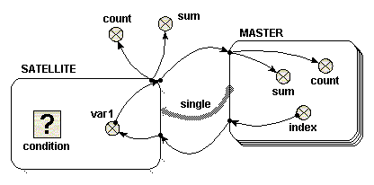

Single role arrow
Single role arrow
Using a single role arrow to connect two submodels is almost exactly equivalent to nesting one submodel inside the other. In effect, the submodel that the role arrow points to, is nested inside the submodel that the role arrow points from. This alternative diagram form is useful because of the extra flexibility it allows in laying out the model diagram. It is also helpful to understand this simple use of role arrows before using them in more complex ways.
The following model diagram illustrates the relevant features of the use of a single role arrow to connect two submodels. In this case, one submodel is called “Master”, and the role arrow points from it, to the other submodel, called “Satellite”. “Master” is a multiple-instance submodel, with fixed dimensions. In the following example, there are ten instances of “Master”. Inside “Master” there is a variable called “index”. The equation for “index” is “index(1)”. The variable “index” therefore has a unique value within each instance of “Master”.

To start with, consider that the  condition symbol in “Satellite” is
omitted. In this case, ten instances of “Satellite”
are created, the same as the number of instances of “Master”. Inside “Satellite” is a variable called
“var1”. There is an influence arrow from
the variable “index” in “Master” to “var1”, and its equation is simply
“index”. The value of “var1” in each
instance of Satellite is therefore equal to the “index” of the equivalent
instance of “Master”.
condition symbol in “Satellite” is
omitted. In this case, ten instances of “Satellite”
are created, the same as the number of instances of “Master”. Inside “Satellite” is a variable called
“var1”. There is an influence arrow from
the variable “index” in “Master” to “var1”, and its equation is simply
“index”. The value of “var1” in each
instance of Satellite is therefore equal to the “index” of the equivalent
instance of “Master”.
To illustrate how “var1” is treated, there are four influence arrows taken from it. Two influence arrows point to variables “count” and “sum” within “Master” and two point to variables “count” and “sum” outside “Master”. There is an important difference in the values received in these two circumstances, which is easy to understand if you consider “Satellite” is treated as if it were nested inside “Master”.
- Inside “Master”, the equation “count({var1})” returns 1, and “sum({var1})” returns a value equal to “index” of the same instance.
- Outside “Master”, the equation “count({var1})” returns 10, and “sum({var1})” returns a value equal to sum of the index of all the instances, i.e. 55, in this case (calculated from 1+2+3+…+9+10)
Beware one point: both inside and outside “Master”, the value returned from “Satellite” is received as a list, which is not what would happen if “Satellite” were nested inside “Master”. An integrating function such as sum() or count() must be used immediately on a list. Inside “Master”, the list consists of a single number, so sum({var1}) returns the value of the number. The reason for using a list is that the list may in fact be empty, rather than containing a single value, for reasons described below. Note that curly braces are used to denote the list.
Now consider a simple equation for the condition symbol. In the example given, the condition symbol has no influence arrows pointing to it, though this is possible. Suppose one wishes “Satellite” to exist for only the odd-numbered instances of “Master”. In this case, the equation “fmod(index(1),2)==1” would be used. Note that the index() function used within “Satellite” refers to the index of the equivalent instance of “Master”.
Using the condition symbol in this or other ways permits the number of instances of “Satellite” to be less than the number of instances of “Master”. There can never be more instances of “Satellite” however than instances of “Master”.
In the example chosen above, in which only odd-numbered instances of “Satellite” are created, the four influence arrows behave like this.
- Inside “Master”, the equation “count({var1})” returns either zero or one. It returns one, only if this is an odd-numbered instance, i.e. for instances 1, 3, 5, 7 and 9. Otherwise it returns zero. In these cases, i.e. instances, 2, 4, 6, 8 and 10, the list is an empty list. Similarly, the equation “sum({var})” returns either zero or a value equal to “index” of the same instance. It returns zero for each empty list, i.e. instances 2, 4 ,6, 8 and 10.
- Outside “Master”, the equation “count({var1})” returns five. The equation “sum({var1})” returns 25 (calculated from 1+3+5+7+9).
When using the condition symbol in “Satellite”, the use of the role arrow is more convenient than the equivalent nested arrangement. If “Satellite” were nested inside “Master” it would not be possible directly to receive the list in a variable outside “Master”.
In : Contents >> Model
diagram elements >> Role arrows